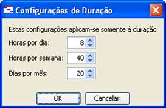
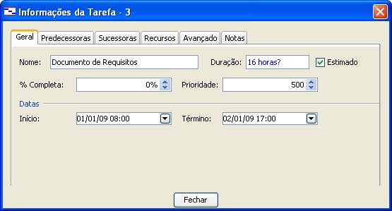
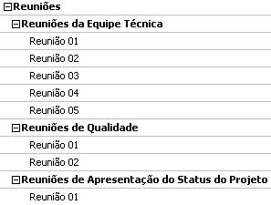

|
Passos
Resumidos:
1.
Preencher a Subseção 3.3
Desenvolvimento do Cronograma Versão 06 do Plano de Projeto;
2. Preencher
a Versão 03 do Cronograma do
Projeto com as datas de início e fim de cada atividade identificada,
considerando as estimativas de atividades realizadas em atividade anterior (Tabela de Estimativa de Atividades Versão 01),
bem como identificando para cada atividade o recurso humano responsável
pela sua realização, e por último as dependências arbitradas (definidas
pela equipe de gerência do projeto) entre as atividades;
Observação: você deverá considerar, em um primeiro momento, as
estimativas de duração preenchidas na Tabela de Estimativa de Atividades.
No entanto, deverá se atentar ao Calendário
da Disciplina, de forma que a realização das atividades esteja equivalente
às datas de entregas das atividades do processo de desenvolvimento de
projeto de software.
Passos
Detalhados:
1.
Preencher a Versão 06 do Plano de Projeto Seção 3
Gerenciamento do Tempo Subseção 3.3 Desenvolvimento do Cronograma;
1.1.
Ler Subseção 3.3 Desenvolvimento do Cronograma
Versão 06 do Plano de Projeto;
1.2.
Preencher a Subseção 3.3 Desenvolvimento do
Cronograma Versão 06 do Plano de Projeto: Esta Subseção é apenas
informativa, na finalidade de documentar que a definição de data de início
e fim das atividades do projeto deverá ser realizada no Cronograma do
Projeto. Basta então que você substitua o trecho <Sigla do Projeto> pela sigla escolhida para o seu
projeto.
2.
Armazenar o Plano de Projeto;
2.1.
Salvar com o nome <Sigla do Projeto>-PlanoDeProjeto_07
3.
Preencher a Versão 03 do Cronograma do Projeto
considerando as estimativas das atividades detalhadas na Tabela de
Estimativa de Atividades Versão 01;
3.1.
Abrir a Versão 01 da Tabela de Estimativa de
Atividades;
3.2.
Configurar propriedades do projeto da Ferramenta OpenProj:
3.2.1.
Clicar em Projeto >> Informações do Projeto,
conforme Figura 7.1:
Figura 7.1
Configurando informações do projeto
3.2.2.
Preencher alguns campos da aba Geral: Nome (com o
nome do seu projeto), Gerente (com o nome do gerente do seu projeto), Data
Início (esta data deve ser a data de início do seu projeto; nesta
disciplina iremos utilizar a data de início do calendário acadêmico, por
exemplo, 01/03/2017). Observe a
Figura 7.2:

Figura
7.2 Tela de Preenchimento de Informações do Projeto
3.2.3.
Importante:
O campo Calendário Base pode ser alterado. Existem outras opções,
diferentes de Padrão, como: 24 horas e Noturno. No caso do nosso projeto
manteremos o calendário denominado Padrão. O Calendário Padrão considera 8
horas de trabalho por dia (De 8:00 às 12:00 De 13:00 às 17:00), conforme
mostra Figura 7.3;

Figura
7.3 Tela de Configurações de Duração do Período de Trabalho Padrão
3.3.
Criar Calendários Específicos para cada Papel da
Equipe (Programador, Analista de Sistema, Gerente de Projeto, Responsável
pela Qualidade e Diretor da Empresa): Os calendários de cada Papel da
Equipe levarão em consideração os dias de Reuniões em que cada um dos
Papéis tem participação, conforme mostra a Figura 7.4;
Figura
7.4 Reuniões x Participantes
3.3.1.
Criar um calendário para cada papel da equipe do
projeto;
3.3.1.1.Clicar no ícone (parte
superior da Ferramenta);
3.3.1.2.Clicar no botão Novo,
conforme Figura 7.5:
Figura
7.5 Criando Novo Calendário
3.3.1.3.Nomear o Novo Calendário,
conforme o exemplo da Figura 7.6 (para o Papel Programador):
Figura
7.6 Definindo o Nome do Novo Calendário
3.3.1.4.Clicar no S de
sexta-feira (uma vez que foi defina a sexta-feira como o dia da semana
designado para reuniões), e definir o Horário de Trabalho, conforme a
Figura 7.7 (neste caso o Horário de 15:00 horas às 17:00 horas ficou
disponível para a realização das Reuniões de Equipe Técnica):
Figura
7.7 Definindo o Nome do Novo Calendário
3.3.1.5.Importante: Deve ser criado um calendário para cada papel
(Programador, Analista de Sistema, Gerente de Projeto, Responsável pela
Qualidade e Diretor da Empresa), conforme 7.8:
Figura
7.8 Criação de Calendários
3.3.1.5.1.
Programador e Analista de Sistema (De 15:00 às
17:00 horas de Sexta-Feira disponível para Reuniões de Equipe Técnica);
3.3.1.5.2.
Gerente de Projeto (De 13:00 às 17:00 horas de
Sexta-Feira disponível para Reuniões de Equipe Técnica, Reuniões de
Qualidade e Reuniões de Apresentação de Status do Projeto);
3.3.1.5.3.
Responsável pela Qualidade (De 13:00 às 15:00 horas
de Sexta-Feira disponível para Reuniões de Qualidade e Reuniões de
Apresentação de Status do Projeto);
3.3.1.5.4.
Diretor da Empresa (De 13:00 às 15:00 horas de
Sexta-Feira disponível para Reuniões de Apresentação de Status do Projeto);
3.4.
Atribuir Calendários aos Recursos Humanos;
3.4.1.
Clicar no ícone ;
3.4.2.
Escolher um dos Recursos Humanos (por exemplo,
Jorge da Silva) e clicar duas vezes no nome do recurso;
3.4.3.
Escolher a aba Geral e especificar o Calendário
deste Recurso no Campo Calendário Base (neste caso foi escolhido o
Calendário Programador, pois Jorge da Silva tem o Papel de Programador),
conforme mostra a Figura 7.9:
Figura
7.9 Designando Calendário Base para Recurso Humano
3.4.3.1.Importante: A designação de Calendário Base deve ser realizada
para todos os Recursos Humanos, de acordo com o Papel de cada um na equipe
do projeto;
3.5.
Preencher duração das atividades;
3.5.1.
Clicar duas vezes em cada uma das atividades do
Cronograma do Projeto;
3.5.2.
Escolher a aba Geral;
3.5.3.
Digitar o tempo estimado da duração da atividade,
conforme Figura 7.10:

Figura
7.10 Tela de Informações da Tarefa Aba Geral
3.5.4.
Importante:
Por padrão a duração da atividade está em dias.
Basta que você digite x horas?, conforme figura 7.10.
Desta forma a Ferramenta OpenProj calcula
automaticamente a equivalência em dias. Exemplo: 2 horas = 0,25 dias.
3.6.
Alocar recurso(s) para cada atividade;
3.6.1.
Clicar duas vezes em cada uma das atividades do
Cronograma do Projeto;
3.6.2.
Escolher a aba Recursos, conforme Figura 7.11:
Figura
7.11 Tela de Informações da Tarefa Aba Recursos
3.6.3.
Clicar no ícone para alocar
recurso(s) para a atividade, conforme Figura 7.12;
Figura
7.12 Tela de Alocação de Recursos
3.6.4.
Clicar duas vezes no nome do(s) Recurso(s)
escolhido(s) para realizar a tarefa;
3.6.4.1.Importante: Para saber qual recurso alocar em cada atividade,
você deverá considerar os Papéis identificados em cada uma das atividades
no Processo de Desenvolvimento de Software PDS-IFES e no Processo de
Gerência de Projeto de Software PGPS-IFES. A alocação de recursos para as
atividades deve estar de acordo com os papéis responsáveis por cada
atividade. Observe a Figura 7.13 para entender onde está identificado o
papel do responsável pela atividade Levantar Requisitos do PDS-IFES que
tem a finalidade de elaborar o Documento de Requisitos, e a Figura 7.14
para saber como ficaria a alocação de recursos para a mesma atividade:
(Neste exemplo foi escolhido o Recurso Bruna de Souza, pois este foi o
Recurso identificado como Analista de Sistemas na Subseção 6.1 Organograma
do Plano de Projeto). No caso de atividades onde o responsável pela
realização é o Programador, você deverá escolher um dentre os programadores
para a realização da atividade. Procure dividir bem as tarefas para não
deixar um programador com muito mais atividade que outro.
Figura
7.13 Papel da atividade de Levantar Requisitos
Figura
7.14 Recurso Alocado em Consideração ao Papel de Analista de Sistema
4.
Importante:
Durante este preenchimento podemos observar alguns aspectos importantes (Os
valores de duração abaixo são apenas ilustrativos, na
finalidade de exemplificar alguns pontos importantes). Observe a
Figura 7.15:
Figura
7.15 Detalhamento de Atividades
4.1.
No campo Nome
vamos nos concentrar em três atividades: Documento de Requisitos, Documento
de Organização de Requisitos e Plano de Projeto.
4.2.
No campo Duração
observamos que todas essas três atividades têm duração estimada em 0,25
dias, o que é o mesmo que 2 horas. A Ferramenta OpenProj
realizou a transformação de horas para dias automaticamente.
4.3.
Início e
Término: Dia e hora de Início da Atividade e Dia e hora de Término da
Atividade, respectivamente:
4.3.1.
Documento de Requisitos: Início 01/01/09 08:00
Esta é a hora de inicial de trabalho em um dia segundo o calendário
escolhido em passos anteriores; Término 01/01/09 10:00 Aqui não existe
dúvidas. Como a atividade começa às 8 horas e tem 2 horas de duração, então
o horário de término desta atividade deve ser 10 horas;
4.3.2.
Documento de Organização de Requisitos: Início
01/01/09 10:00 Para entendermos porque esta atividade começa às 10 horas
devemos lembrar que esta atividade depende da realização da atividade 3
(Documento de Requisitos). Isso significa que ela só pode começar depois
que a atividade 3 terminar, e a hora estimada para o término da atividade 3
é 10 horas; Término 01/01/09 13:00 Neste caso seria óbvio pensar que o
término deveria ser 12:00 horas, pois as jornadas de trabalho na Ferramenta
OpenProj estão como 8:00 a 12:00 e 13:00 a 17:00.
Todavia no caso de uma atividade terminar às 12 horas, a Ferramenta OpenProj mostra o Término como 13:00. É muito
importante notar que a duração da atividade continua sendo de 2 horas ou
0,25 dias. Isso porque de 12:00 horas às 13:00 horas é considerado horário
de almoço, ou seja, não contabilizado;
4.3.3.
Plano de Projeto: Início 01/01/09 13:00 Para
entendermos porque esta atividade começa às 13 horas devemos lembrar que
esta atividade depende da realização da atividade 4 (Documento de
Organização de Requisitos). Isso significa que ela só pode começar depois
que a atividade 4 terminar, e a hora estimada para o término da atividade 4
é 13 horas; Término 01/01/09 15:00 Aqui não existe dúvidas. Como a
atividade começa às 13 horas e tem 2 horas de duração, então o horário de
término desta atividade deve ser 15 horas;
4.4.
Predecessoras:
Este campo indica quais as atividades que devem ser realizadas antes que a
atividade em questão seja realizada. Exemplo: A atividade 4 (Documento de
Organização de Requisitos) tem a atividade 3 (Documento de Requisitos) como
predecessora. Isso significa que a atividade 4 somente pode ser realizada
depois do término da atividade 3;
4.5.
Nome do
Recurso: Este campo armazena o nome do recurso responsável pela
realização da atividade. É interessante observar aqui que as atividades 3 e
4 estão alocadas para o recurso Bruna de Souza, isto porque, de acordo com
o processo de desenvolvimento de software PSD-IFES, são atividades de responsabilidade
do Analista de Sistema. E no Sistema de Controle de Videolocadora
o Analista de Sistema é Bruna de Souza. Já a atividade 5 está alocada para
o Gerente de Projeto, Rafael
Vargas;
5.
Identificar as dependências
arbitrárias entre as atividades, ou seja, as dependências definidas
pela equipe de gerência de projeto. Para entendermos melhor como estas
dependências serão identificadas, observe a Figura 7.16:
Figura 7.16
Identificando Dependências Arbitrárias (1)
5.1.
Importante:
Observando a Figura 7.16 podemos verificar que o recurso Thiago Mesquita
está alocado para as atividades 39 e 42, ambas as atividades com 8 horas,
ou um dia, de duração. Isso significa que para um recurso como este, com 8
horas de trabalho por dia, seriam necessárias 8 horas de trabalho extra
para a elaboração das duas atividades. Todavia, por um critério arbitrário
(lembre-se das dependências arbitrárias) foi definido pelo gerente de
projeto que não seriam utilizadas horas extras, e que para solucionar este
problema a solução seria identificar a atividade 39 como predecessora da
atividade 42, conforme mostra Figura 7.17:
Figura 7.17
Identificando Dependências Arbitrárias (2)
6.
Observar as porcentagens de alocações dos recursos
para com as atividades. Isso, pois os recursos não devem estar
sobrecarregados, ou seja, como estamos considerando o calendário padrão de
trabalho, cada recurso não deve estar alocado a mais de 8 horas de trabalho
diárias isso significa que em nenhuma atividade o recurso humano pode ter
porcentagem de alocação superior a 100% (isso deve ser evitado ao máximo);
6.1.
Para verificar a porcentagem de alocações dos
recursos nas atividades você deve clicar em uma atividade qualquer, e
depois clicar no ícone . Clicando neste ícone, após termos clicado em uma
atividade, como por exemplo, Documento de Requisitos, será exibido um
gráfico como o da Figura 7.18 (Os valores de duração abaixo são apenas
ilustrativos, na finalidade de exemplificar
alguns pontos importantes):
Figura 7.18
Gráfico de Porcentagem de Alocação de Recurso por Atividade
6.2.
A explicação para o gráfico da Figura 7.18 é que o
recurso humano Bruna de Souza (mostrado a esquerda, e evidenciado por uma
bolinha verde) designado para a atividade de Documento de Requisitos está
alocado em 75% de seu tempo diário disponível, que é 8 horas por dia. Isso
é observado quando nos concentramos na coluna Q do gráfico, a qual
representa o dia da semana quinta-feira (mesmo dia de realização da
atividade). Nesta coluna observamos que uma parte está colorida de verde e
outra de azul. O azul significa a porcentagem de alocação do recurso apenas
considerando a atividade selecionada, ou seja, apenas a atividade Documento
de Requisitos que tem duração igual a 2 horas, ou 25% (75% do total - 50%
da parte verde) do total de horas diárias (8 horas) disponíveis do recurso
Bruna de Souza. Já a parte verde considera a alocação do recurso humano nas
demais atividades do projeto, ou seja, Bruna de Souza está alocada na
quinta-feira em mais 50% do seu tempo diário disponível em outras
atividades do projeto.
7.
Alocar recursos materiais a atividade
Equipamentos;
7.1.
Clicar na atividade denominada Equipamentos, escolher
a aba Recursos e alocar todos os equipamentos identificados anteriormente
como necessários ao projeto, conforme a Figura 7.19:
Figura 7.19
Alocação de Recursos Materiais para Atividade Equipamentos
7.2.
Importante:
Esta atividade deve ter duração igual a zero dias. O início da atividade
pode permanecer como sendo o primeiro dia útil do projeto;
8.
Estimar a data de inicio
e término das reuniões, bem como a alocação de recursos humanos para tais;
8.1.
Ler Seções 6.1.1, 6.1.2 e 6.1.3 na finalidade de
verificar a periodicidade definida para ocorrência de reuniões da equipe
técnica, de apresentação do status do projeto e de qualidade,
respectivamente;
8.2.
Calcular a quantidade necessária de cada tipo de
reuniões levando em consideração a duração estimada do projeto. Para isto
observe em seu projeto o Término estimado, conforme Figura 7.20;

Figura 7.20
Término Previsto do Projeto
8.2.1.
Importante:
Considerando que neste caso a duração do projeto é de aproximadamente um
mês e nove dias, teremos então aproximadamente cinco reuniões de equipe
técnica (pois são reuniões semanais identificadas no cronograma para as
sextas-feiras), duas reuniões de qualidade (pois são reuniões quinzenais
poderiam ser em quaisquer dias, no caso do sistema de controle da videolocadora foi escolhida também a sexta-feira) e
apenas uma reunião de apresentação do status do projeto (pois são reuniões
mensais - poderia ser em quaisquer dias, no caso do sistema de controle da videolocadora foi escolhida novamente a sexta-feira);
8.3.
Criar nova atividade para cada ocorrência de
reunião de acordo com a Figura 7.21:

Figura 7.21
Criação das Atividades de Reuniões
8.4.
Configurar as atividades de reuniões: As reuniões
de equipe técnica devem ocorrer as sextas-feiras de 15:00 às 17:00, isso
porque o Calendário Base dos
recursos envolvidos nesta reunião foi configurado nesta finalidade.
As demais reuniões foram configuradas para acontecerem as sextas-feiras de
13:00 às 15:00, lembrando sempre de considerar a periodicidade de cada tipo
de reunião.
8.4.1.
Clicar duas vezes na reunião, por exemplo, Reunião
01, e escolher a aba Geral para especificar a duração (2 horas?) e as
datas de início e término (incluindo hora, inicio 15:00 e término
17:00), conforme mostra Figura 7.22:
Figura 7.22
Preenchendo Duração, Início e Término da Atividade de Reunião
8.4.2.
Escolher aba Avançado e marcar opção Ignorar
Recurso do Calendário (pois estas reuniões estão marcadas fora do horário normal
do Calendário dos Recursos), conforme Figura 7.23:
Figura 7.23
Aba Avançado - Marcando Opção Ignorar Recurso do Calendário
8.4.3.
Alocar recursos para as atividades de reuniões:
Clicar na Aba Recursos e alocar os recursos humanos participantes da
reunião, considerando as seguintes informações:
8.4.3.1.Reunião da Equipe Técnica:
Equipe de Desenvolvimento Programadores e Analista de Sistemas (Jorge da Silva,
João Victor, Thiago Mesquita, Bruna de Souza) e o Gerente de Projeto (Rafael Vargas);
8.4.3.2.Reunião de Apresentação de
Status do Projeto: Gerente de Projeto (Rafael Vargas), o
Responsável pela Qualidade (José da Qualidade) e o Diretor da Empresa (José
da Diretoria);
8.4.3.3.Reunião da Qualidade:
Gerente de Projeto (Rafael
Vargas) e Responsável pela Qualidade (José da Qualidade);
9.
Estimar a data de início e término da atividade de
acompanhamento diário;
9.1.
Esta atividade deve iniciar um dia depois do
término da atividade Plano de Projeto. Isso porque a finalidade principal
desta atividade é a de acompanhar o andamento do projeto garantindo que
este esteja dentro do previsto no plano de projeto e cronograma do projeto.
No caso do cronograma exemplo, referente ao sistema da videolocadora
a data de término da atividade Plano de Projeto foi estimada para
07/01/2009. Logo, a data de início da atividade de acompanhamento, neste
caso, deve ser igual a 08/01/2009.
9.2.
A data de término da atividade deve ser a mesma
data de término do projeto, conforme Figura 7.20, mostrada anteriormente,
na qual a Data de Término do projeto é 10/02/2009.
10.
Estimar a data de início e término dos
treinamentos, bem como a alocação de recursos humanos para tais;
10.1.
Especificar data de início e término das atividades
de treinamentos: No caso do sistema da videolocadora
foi identificado apenas um treinamento a ser realizado. Normalmente os
treinamentos relacionados a Linguagens de Programação, como foi neste caso,
são realizados no início do projeto, quando o mesmo ainda está em sua fase
de análise. Neste momento os recursos humanos com o papel de programadores
estão com um tempo mais livre. Isso porque no início do projeto a pessoa
que tem um maior número de atividades é o analista de sistema e o gerente
de projetos;
10.2.
Importante:
A duração dos treinamentos foi estimada para quatro horas, de acordo com a
Tabela de Estimativa de Atividades;
10.3.
Alocar recursos para a atividade de treinamento:
Neste caso você deve seguir o que foi especificado na Seção 6.2 do Plano de
Projeto sobre o Detalhamento do Suporte. Para o caso do sistema de controle
de videolocadora foram escolhidos os seguintes
recursos: Jorge da Silva, João Victor, Thiago Mesquita (programadores) e
Bruna de Souza (responsável pelo treinamento);
11.
Armazenar o Cronograma do Projeto;
11.1.
Salvar com o nome <Sigla do
Projeto>-CronogramaDoProjeto_04
|